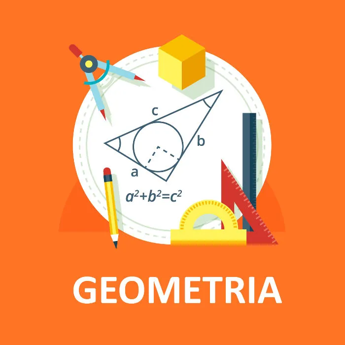

O que é geometria? É o estudo das formas presentes na natureza e das propriedades que essas
formas possuem.

A Geometria é uma das três grandes áreas da Matemática, ao lado de cálculo
e álgebra . A
palavra “geometria” tem origem grega e sua tradução literal é: “medir a terra”. Essa
informação nos dá pistas de como nasceu e o motivo pelo qual ela se desenvolveu durante os
séculos.
A Geometria é o estudo das formas dos objetos presentes na natureza, das
posições ocupadas
por esses objetos, das relações e das propriedades relativas a essas formas.
A geometria é construída sobre objetos primitivos: ponto, reta, plano,
espaço, entre
outros. Esses objetos não possuem definição, mas possuem características que possibilitam
sua identificação.
Fazendo uso desses objetos primitivos é que são definidas as primeiras formas
geométricas do
plano: segmentos de reta, polígonos e ângulos. A partir delas, é feita a definição de
distância entre dois pontos, da qual depende a definição de círculo. Tudo isso serve como
base para a construção da geometria espacial.
A geometria também é responsável por propriedades das figuras
geométricas. Essas
propriedades nada mais são do que resultados de relações analisadas nos objetos e figuras
geométricas. Uma propriedade das circunferências, por exemplo, é a seguinte: o resultado da
divisão entre o perímetro de um círculo e seu diâmetro sempre será igual a π
(aproximadamente 3,14).
Desse modo, a geometria é construída relacionando objetos básicos a fim de
obter objetos
mais elaborados. Estes são relacionados entre si para chegar a objetos ainda mais elaborados
e assim sucessivamente.
Atualmente a geometria é dividida em dois conjuntos: Geometria Euclidiana e Geometrias não Euclidianas.
Euclides, grande matemático e escritor, viveu provavelmente no século III a.C. e é chamado
de pai da geometria. Ele foi o primeiro a reunir toda a geometria em uma
única obra, chamada
“Os Elementos”. Esse matemático baseou a geometria plana em cinco postulados.
O quinto desses postulados é muito mais sofisticado que os outros quatro. Isso levantou
dúvidas entre os matemáticos, desde sua época até meados do século XIX, quando Lobachevsky,
um matemático russo, resolveu reconstruir a geometria, mas utilizando a
negação do quinto
postulado de Euclides.
Esse postulado afirmava: Por um ponto fora de uma reta passa uma única reta paralela à reta
dada. Lobachevsky considerou o contrário: Por um ponto fora de uma reta passa mais de
uma
reta paralela à reta dada.
Os objetos e figuras geométricas são definidos da mesma forma que na geometria plana, a
única diferença é realmente o quinto postulado.
Os resultados obtidos por Lobachevsky são divididos da seguinte forma: aqueles que não
dependem do quinto axioma de Euclides são idênticos à geometria tradicional. Já os que
dependem são diferentes. Por exemplo, a soma dos ângulos internos de um triângulo, nas
geometrias construídas a partir de Lobachevsky, não é igual a 180°.
Os estudos de Lobachevsky deram origem à geometria Rhiemanniana e abriram uma porta para a
construção de outrasgeometrias completamente distintas da geometria plana e
espacial que
conhecemos. O fato mais interessante é que os seus resultados possuem muitas aplicações no
dia a dia.
É a geometria discutida nos ensinos fundamental e médio e a única geometria conhecida pelo
homem até meados do século XIX. A geometria Euclidiana é dividida nas seguintes subáreas:
Geometria Plana: Todas as figuras, formas e definições são feitas para objetos pertencentes
ao plano, isto é, que possuem apenas largura e comprimento, mas não possuem profundidade.
Os conceitos discutidos pela geometria plana são de ponto, reta, plano, posições relativas,
distância entre dois pontos, ângulos, polígonos, áreas e trigonometria, entre outros.
Geometria Espacial: Os objetos pertencem ao espaço tridimensional, ou seja, agora existe a
possibilidade de considerar a sua profundidade.
Os conceitos discutidos na geometria espacial são: todos os da geometria plana, além de
planos, poliedros e corpos redondos.
Geometria Analítica: Subárea que relaciona a geometria com a álgebra e utiliza uma para
resolver problemas provenientes da outra.
Os conceitos discutidos na geometria analítica são: todos os conceitos e definições da
geometria plana e espacial do ponto de vista algébrico, coordenadas, vetores, matrizes,
quádricas e sólidos de revolução, entre outros.